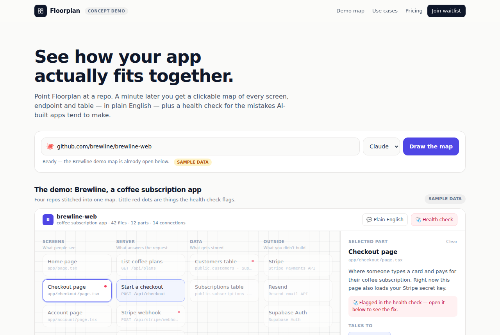

AI 把你的代码库画成地图
haydenschmitty/floorplan · Dev toolsMIT⭐ 1,631

Floorplan 是一个由 Claude 或 Codex 驱动的工具，它读取你的代码库，生成一张可交互的“平面图”——用大白话给每个模块、文件和网络请求起名，并画出它们之间的连接。作者是 haydenschmitty，MIT 许可，刚创建 5 天，Star 数已经 1600 多，日增约 900，传播势头很猛。
它为什么最近火？README 里说得很直白：你（可能借助 AI）把应用做出来了，能跑，但被问“用户结账时发生了什么”或“改这里会影响什么”，你答不上来。Floorplan 就是那张没人画的图。它支持从屏幕出发、跨仓库匹配前后端请求、用自然语言提问（比如“退款怎么回到用户卡上”），还会生成健康检查报告，抓 AI 生成代码常见的坑，比如密钥写死在代码里、Supabase 表公开可读、Stripe webhook 可伪造等。
如果做成产品，机会在于托管网页版：连上 GitHub 仓库，几秒出图，再加团队协作和定期健康扫描。免费开源本地运行是获客入口，收费点可以放在私有仓库、历史对比和多人共享地图上。不过这个赛道已经有 Archify、Understand Anything 等竞品，热度也可能有短期泡沫，适合快速验证而非重仓。
Today's top 5
| # | Repo | Buzz | Startup | Overall |
|---|---|---|---|---|
| 1 | haydenschmitty/floorplan | 7.67 | 7.1 | 7.76 |
| 2 | Nutlope/hallmark | 7.67 | 7.1 | 7.58 |
| 3 | lexifina/global-law | 7.67 | 7.75 | 7.56 |
| 4 | milind-soni/OpenMausBot | 8.0 | 6.65 | 7.54 |
| 5 | beenuar/AiSOC | 7.33 | 8.15 | 7.49 |